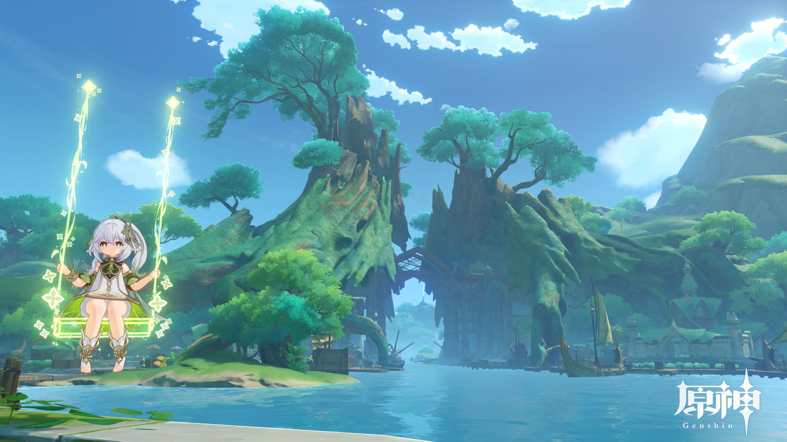
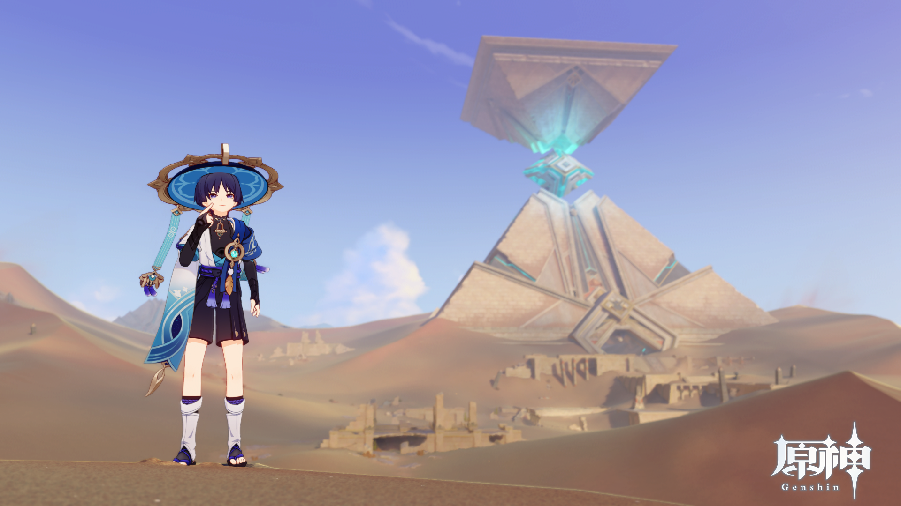
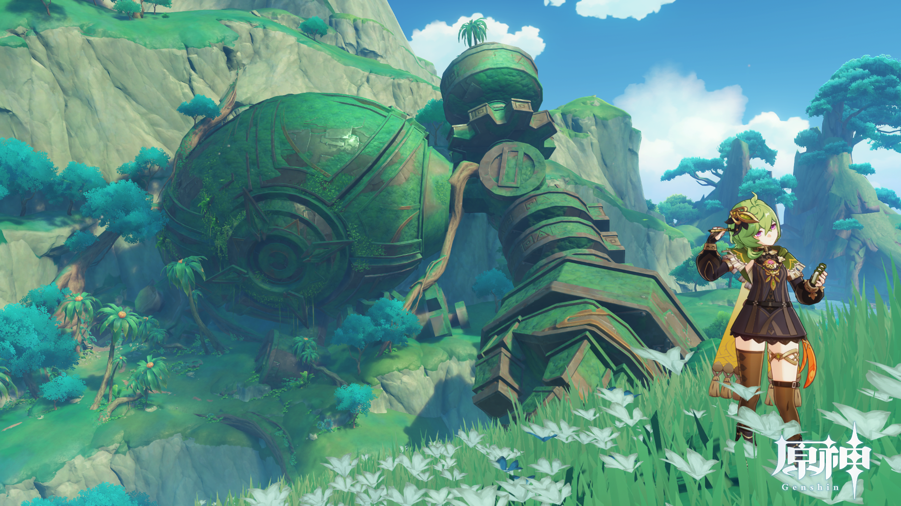

- 
圧倒的 大自然
朽ちた木の根っこでこのサイズ！？朽ちる前の状態を一目でいいから見てみたい
左にいるのはナヒーダちゃん！
いっつもこのブランコに乗ってるんだけど俺もこのブランコ欲しい
どこでも座れるなんてずるだろ！ - 
べーっ！
生意気なショタっていいよな
後ろのピラミッドもめっちゃイイ
この大自然の中にあるアーティファクト感が本当にたまらん - 
何だこのロボ！？
いつかこんなでっかいロボット操作してみてぇ～
右にいるのはコレイちゃん！
可愛いけどちょっとばかし口が悪い でもそこがイイんですわ
だって可愛いし！
知恵の国 スメール
スメールについて！
知恵の国ってきいてたからどんな近代都市が出てくるのかと思ったらとんでもない大自然で溢れてた
そんなところに来た主人公達
神に会いたいな～と思ってたら神を幽閉してるだって！？
どないしてそうなっちゃったんだ！こっちは神に会いたいってのに！！
いったいどうなっちゃうの～！？